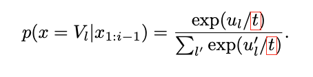
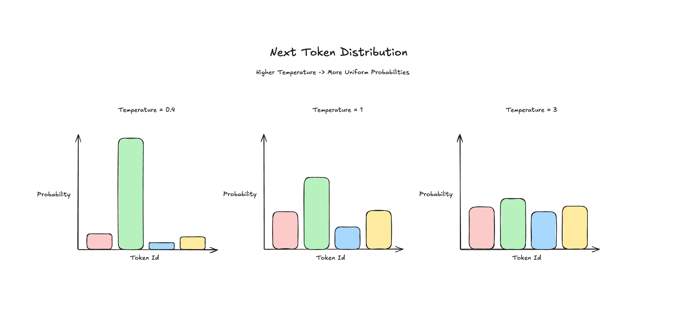
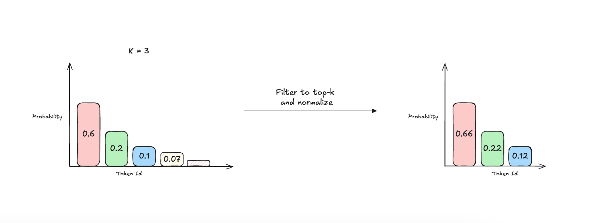
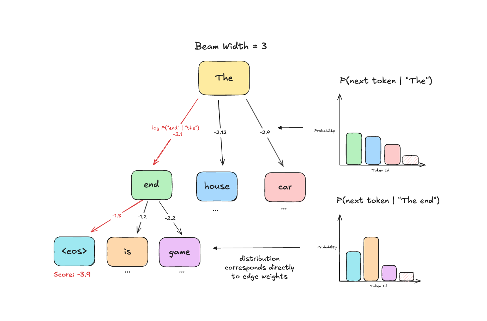
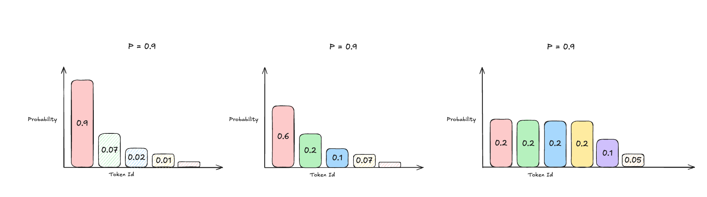

Notes on LLM Sampling
Background
The goal of decoder-based LLM training (i.e. GPT) is to produce a model that can an accurately learn a probability distribution over the next token in a sequence conditioned on all prior tokens and the current token (autoregressive). With the idea that given a new sequence of input tokens, the model has learned enough semantics/structure from the training data to produce novel, coherent text generations. In this article, we assume we have a pre-trained model and now we are trying to use that model to generate text (aka sampling from the model).
To formalize this, we are sampling from a discrete probability distribution of possible output tokens (the number of possible output tokens is determined by the vocabulary size of the tokenizer used during training). In the case of GPT-2, the possible output tokens would be 50,257 (vocab_size).
For more considerations about vocabulary sizes and how they affect LLM performance there is a good article here.
Random Sampling
The most naive form of sampling is simply to choose a token from the vocabulary at random at each decoding step until a stop token is selected or a maximum output size is reached. This approach should almost never be used as it ignores all the statistical structure of the data the model was trained on.
Greedy Sampling
The first natural extension is to incorporate the statistics the model has learned next token with respect to all previous tokens in the sequence
If the model was trained properly, one approach is to select the next token by choosing the the token with the highest model-assigned probability at each step. In PyTorch that would look something like this:
result = ""
while len(result) <= max_output_size:
next_token_logits = # Output from forward pass of LLM with shape: (vocab_size,)
next_token_probs = F.softmax(next_token_logits, dim=0) # Convert to probability distribution over tokens
next_token_idx = torch.argmax(next_token_probs).item() # sample a single token idx greedily
next_token = itos[next_token_idx] # Get the corresponding token for the index
# Stop generation once we encounter special end of sequence token
if next_token == '<EOS>':
break
result += next_token
...
Greedily selecting the highest probability next tokens in theory should produce high quality outputs and commonly does, however there are quite a few failure modes discussed here (limited output diversity and looping behavior).
Weighted Sampling
A more common starting point is to sample the next token weighted by the model-assigned probabilities. For example, if a token has an 80% probability under the model it should be sampled around 80% of the time conditioned on the same input sequence etc. This approach is often favored as it will increase output diversity and alleviate some of the above failure modes.
That can be implemented with a one line change to the above code.
result = ""
while len(result) <= max_output_size:
next_token_logits = # Output from forward pass of LLM with shape: (vocab_size,)
next_token_probs = F.softmax(next_token_logits, dim=0) # Convert to probability distribution over tokens
next_token_idx = torch.multinomial(next_token_probs, 1).item() #samples a single token idx weighted by next_token_probs next_token = itos[next_token_idx] # Get the corresponding token for the index
# Stop generation once we encounter special end of sequence token
if next_token == '<EOS>':
break
result += next_token
...
With this change to sampling from the next token, we can conveniently introduce a single hyperparameter that can control between random, greedy, and weighted sampling called temperature.
Temperature
Under the hood, temperature is simply a number which we divide the log-probs (logits) by prior to converting them into a probability distribution via softmax. As temperature increases it has the effect of flattening/smoothing out the next token distribution (i.e. making the probability of selecting any one token more uniform) and in the opposite case (i.e. boosting. high probability tokens). We illustrate the effects of using different temperature values below.




Case 1: Temperature = 0 (Greedy Sampling)
Selects the token with the highest probability assigned by the model aka greedy sampling
Case 2: Temperature < 1
Boosts highly probable tokens initially assigned by the model while down-weighting low probability tokens, introduces some variability so the max probability token isn’t always selected leading to more diverse outputs while still respecting the original distribution for the most part.
Case 3: Temperature = 1
This is the no-op case where we just preserve the original probabilities predicted by the model since its just a division by 1.
Case 4: Temperature > 1
As the temperature tends to larger values it has the effect of smoothing the probability distribution over next tokens to become more and more uniform. This further increases diversity at the expense of reducing reliance on statistical patterns learned by the LLM during training.
Temperature and Reasoning Models
Notably, OpenAI's GPT-5 series of reasoning models do not expose temperature as a configurable parameter via the API. Although not officially confirmed, some reasons could include the fact that reasoning processes performed by these models are complex and may use different temperatures at different stages (exploring potential strategies (high temp) vs. evaluating intermediate results (low temp)). Additionally, for the types of tasks that reasoning models excel at, diversity of output is often less important than correctness, such that having low-temperature values baked in emphasizes accuracy and prevents suboptimal model outputs due to user misconfiguration.
Incorporating temperature into our above sampling code is also a minor change:
result = ""
temperature = 0.6
while len(result) <= max_output_size:
next_token_logits = # Output from forward pass of LLM with shape: (vocab_size,)
next_token_probs = F.softmax(next_token_logits/temperature, dim=0) # Convert to probability distribution over tokens
next_token_idx = torch.multinomial(next_token_probs, 1).item() # samples a single token idx weighted by next_token_probs next_token = itos[next_token_idx] # Get the corresponding token for the index
next_token = itos[next_token_idx] # Get the corresponding token for the index
# Stop generation once we encounter special end of sequence token
if next_token == '<EOS>':
break
result += next_token
...
Top-k Sampling
Top-k sampling is very similar to the above sampling approach except we filter the output distribution to only contain the top-k most probable next tokens prior to choosing. The one thing to keep note of is that the probabilities need to be renormalized amongst the top-k choices such that they sum to 1.


result = ""
temperature = 0.6
k = 3
while len(result) <= max_output_size:
next_token_logits = # Output from forward pass of LLM with shape: (vocab_size,)
next_token_probs = F.softmax(next_token_logits/temperature, dim=0) # Convert to probability distribution over tokens
topk_token_vals, topk_token_idxs = torch.topk(next_token_probs, k)
topk_token_vals = topk_token_vals / topk_token_vals.sum(dim=0) # Normalize
next_token_idx = torch.multinomial(topk_token_vals, 1).item() # samples a single token idx weighted by next_token_prob
next_token = itos[topk_token_idxs[next_token_idx]]
# Stop generation once we encounter special end of sequence token
if next_token == '<EOS>':
break
result += next_tokenBeam Search
Beam search is a deterministic decoding method that finds high-probability sequences by exploring multiple candidate paths simultaneously. It is parameterized by beam_width, which determines how many candidate sequences (beams) we maintain at each step. At each position, we expand all current beams by considering the top-beam_width tokens based on their probability given the current sequence.
At each step, we score candidates by summing the log-probabilities of all tokens in the sequence. We then keep only the top beam_width candidates ranked by cumulative score, discarding the rest. Since log probabilities are negative, adding more tokens makes scores more negative, which inherently biases toward shorter sequences. To counteract this, techniques like length normalization are used to encourage complete, meaningful outputs. The search terminates when beam_width beams have reached an end token (<eos>) or hit the maximum length."


When to use this?
Beam search provides several advantages over traditional sampling, particularly in cases where correctness is important rather than diversity of outputs. Given that beam search tries to find sequences that maximize likelihood, it can help produce more accurate and coherent results. It also has the advantage of being deterministic where given the same input context and beam width, it will generate the same output every time.
Nucleus (Top-p) Sampling
A simpler approach than beam search is top-p sampling (also known as nucleus sampling). The concept is similar to top-k, except k is computed dynamically based on cumulative probability. With a p value of 0.95, we select the most probable tokens and sum their probabilities until reaching 0.95, then discard the remaining tokens. The key insight is that the number of candidates changes based on the distribution's shape where a more uniform distribution yields more candidates, and vice versa. This contrasts with top-k, where we always select the top-k candidates regardless of their probability mass. This approach effectively tightens or relaxes the nucleus depending on how probability is distributed.
In the diagram below the colored bars represent the available candidates and we can observe that the number of candidates increases as the distribution becomes more uniform.

